Repaso de la Tanda 10R
La batería de pruebas en 0 fallos de una pasada (tres veces seguidas y en 35 minutos), la descarga más ligera, las zonas de toque de 44 px y los retoques de la 10N12. Marca cada punto en tu teléfono cuando lo hayas comprobado (se guarda en este navegador).
0 · Antes de empezar ✅ Hecho — Prompt guardado tal cual (llegó entero, acaba en «reinicia el api-server»); migraciones hasta la 0073 aplicadas; nota de estado cada 30 minutos; sin motor (muestra de 60 fechas idéntica)Sin migración nueva. Motor sin tocar: la muestra de 60 fechas sale idéntica. Dónde: No es de móvil. 0b · Respuestas a la 10S8 ✅ Hecho — El candado de los documentos depende solo de tener el pase, no del cobro: sin pase, candado y aviso pequeño también con el cobro apagado; el resto de la app como estabaHook nuevo solo para documentos (usePaseParaDocumentos); abrirAvisoPase y AvisoPaseHost tenían su propio «si hay cobro» y se ajustaron solo para las claves documento_*. Con la lectura de logros apagada el candado queda en «con» y manda el servidor (403). Probado forzando el estado del pase en la página, no con el cobro apagado de verdad en el servidor. Dónde: RESERVAS con cuenta sin pase: Entradas y Free Tour, Llegada y vuelta, Alojamiento. 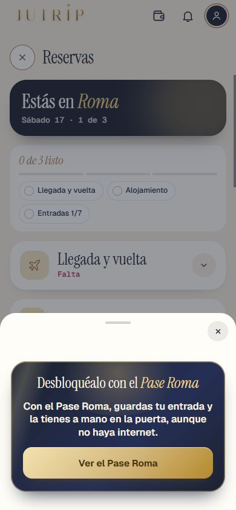
✅ Hecho — «Y N sitios más…» cuenta TODAS las paradas del día que no caben, imprescindibles o noLa parada de llegada no cuenta (no es un sitio). Solo cliente; el motor ya devolvía todas. Dónde: Con pase: cambiar la hora del vuelo de llegada > Sí, adaptarlos > aviso de abajo. ✅ Hecho — Pasar otra vez pruebaTanda10S8 (A a D) y pruebaJutripVer el informe. Dónde: No es de móvil. 1 · Los enlaces buenos ⚠️ A medias — Los siete slugs puestos; Ostia Antica como está; resolver en el sandbox y decir cuáles y con qué númeroSlugs puestos y «Reservar» abre la página real de cada una (las 8 dan 200). En el sandbox solo se resuelven 2 de 8: florencia_pisa (142547) y ostia_antica (2283). Pompeya y Sorrento, Nápoles y Pompeya en tren, Costa Amalfitana, Tívoli, Florencia en tren y Venecia dan 404: el sandbox no las tiene. Con la API real harán falta sus números en data/civitatis/roma.json. Dónde: Excursiones desde Roma > Reservar. 2 · Los datos de hoy ✅ Hecho — Los siete datos de la tabla (precio, nota sobre 10, opiniones, duración, cancelación) con «comprobado: 2026-10-26 (Eric, web de Civitatis)»Tívoli sigue con su duración de ahora (5 h) porque la API no dio otra. Nápoles y Pompeya en tren: cancelación «—», no sale nada. Ostia Antica mantiene su nota de antes (4,8/5, 278 opiniones): no estaba en tu tabla. Dónde: Lista de Excursiones desde Roma. 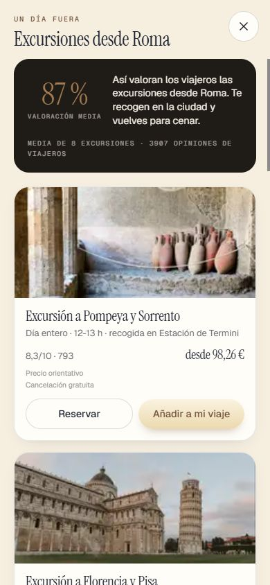
✅ Hecho — Nota sobre 10 visible; fuera los tachados escritos a mano y provisional_pricingEfecto de datos: el top de excursiones del banner de días ordena por nota y ahora hay siete sobre 10 (Ostia sigue sobre 5): puede cambiar el orden. La muestra de 60 no lo cubre. Dónde: Lista de Excursiones. ✅ Hecho — «Precio orientativo» en pequeño debajo del precio mientras no venga de la API; sin esa línea con la API«Sin él con la API» está probado en pruebaCivitatis1, no directamente en pantalla. Dónde: Lista de Excursiones, tarjetas de la ficha del día y página del día de excursión. ✅ Hecho — «No reembolsable» bien a la vista en la tarjeta y en la ficha de Florencia en tren, en estilo de avisoCaja champán con «!». En la página del día de excursión se comprobó por datos, sin captura. Dónde: Excursiones > Florencia en tren. 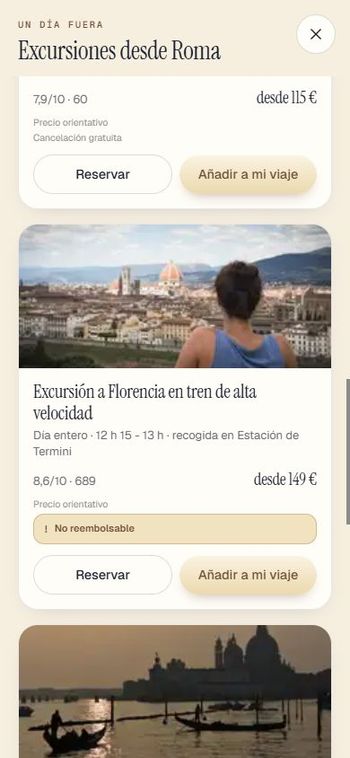
2b · Fotos de Civitatis ⚠️ A medias — Fotos de Civitatis de sus servidores públicos (no qa.) en tarjeta y ficha de las siete, guardando la dirección y la fecha; sin su nombre en la appFotos de cdn2.civitatis.com (las 8 responden 200), guardadas con fecha. Comprobadas a ojo contra su web: Venecia, Pompeya en tren y Florencia y Pisa; el resto por ruta y nombre de archivo. No se pudo confirmar con la API que la galería sea la de la web: el sandbox no tiene esas excursiones; se usa la foto principal. En la página del día de excursión la foto se comprobó por datos, no en pantalla. Dónde: Lista de Excursiones y página del día de excursión. 3 · Venecia, nueva ✅ Hecho — Foto, coordenadas, punto de encuentro, descripción corta nuestra; sale en la lista y donde salen las demásPunto de encuentro «Via Marsala 46/48 (junto a la estación Termini)», de su web. Sin tocar el motor: por el orden del JSON solo entra en el grupo de excursiones de viajes de 6 o más días. Dónde: Excursiones desde Roma > Venecia. 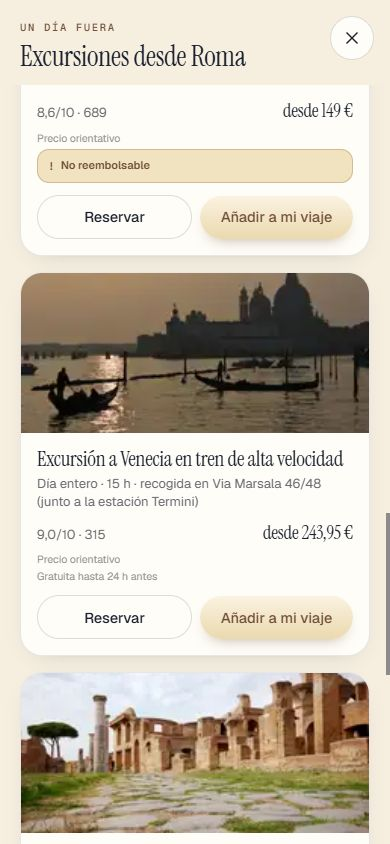
4 · Excursiones en RESERVAS ✅ Hecho — La excursión reservada como una entrada (E1 a E5): nombre grande, día y hora en sus dos cuadros, para quién, precio, dos lápices, papelera roja con DeshacerSolo salen las excursiones en RESERVAS con 4 o más días sin la vuelta. Un viaje compartido ve su propia tarjeta, como las entradas; el caso de invitado solo se probó por código. Sin captura de Design al lado: Design no tiene pieza propia de excursión, usa E1 a E5. Dónde: RESERVAS > Excursiones, viaje de 4 días o más con una excursión reservada. 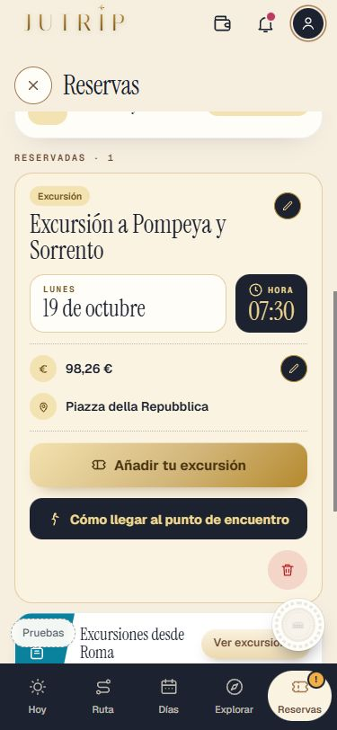
✅ Hecho — [Añadir tu excursión] con candado dorado y aviso pequeño sin pase; con pase, localizador, código «Toca para ampliar» y «Datos de la excursión» con lápiz; lectura por read-ticket con sesión, pase y límiteLectura nueva tipo «excursion» (Haiku, coste en el registro como read-excursion-ticket), nunca devuelve nombre de persona ni teléfono. Probado con Claude de mentira; falta probar con un PDF real de Civitatis. Dónde: RESERVAS > Excursiones, con y sin pase. 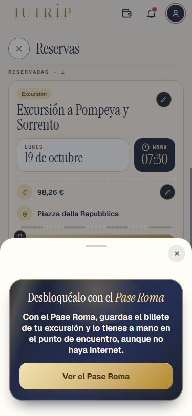
⚠️ A medias — Punto de encuentro con [Cómo llegar al punto de encuentro] (con pase), y «Tu excursión» con su código en HOY (con pase)En HOY sin pase sale «Tu modo Hoy es parte del Pase Roma» (como «Tu entrada»), no hay candado. La tarjeta del día dice el punto de encuentro de la excursión y el botón usa el de la reserva si se editó. La captura con pase usa una reserva montada por la prueba, no un PDF real. Dónde: HOY el día de la excursión, con pase. 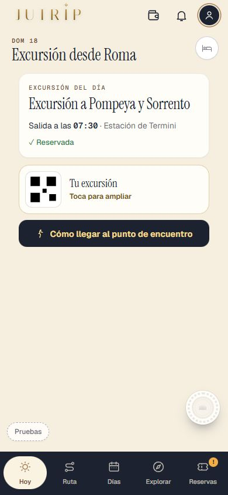
✅ Hecho — El día de la excursión no cambia de sitio al reservarla (regla 6j); fechas enteras, bloque en claro y cabecera sin líneaComprobado en la prueba: «Datos de la excursión» no llama a addReservation. Dónde: RESERVAS y DÍAS. 5 · La prueba ✅ Hecho — pruebaTanda10R (A a D) y pruebaCivitatis1 al día; solo lo tocado más pruebaJutrip; capturas y REPASO_10R.htmlCapturas de la lista, de Venecia, de Florencia en tren y de la excursión en RESERVAS, sin y con pase. Dónde: No es de móvil. Todas las capturas
10r_candado_documentos_1 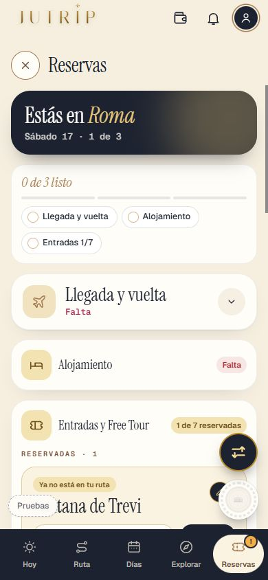
10r_candado_documentos_2 10r_excursiones_01_lista 10r_excursiones_02_venecia 10r_excursiones_03_florencia_tren 10r_hoy_tu_excursion_1 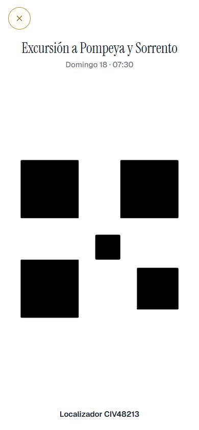
10r_hoy_tu_excursion_2 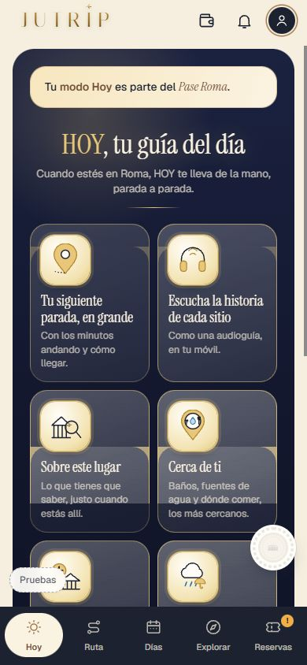
10r_hoy_tu_excursion_sin_pase 10r_reservas_excursion_aviso_375 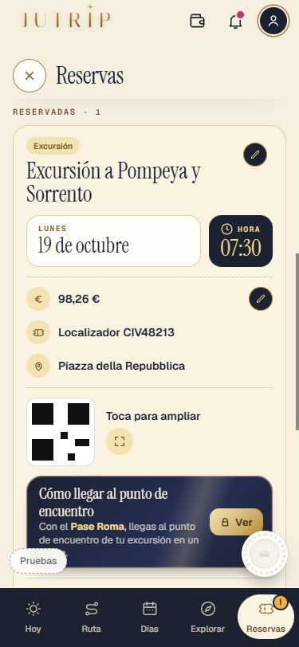
10r_reservas_excursion_billete_gratis_375 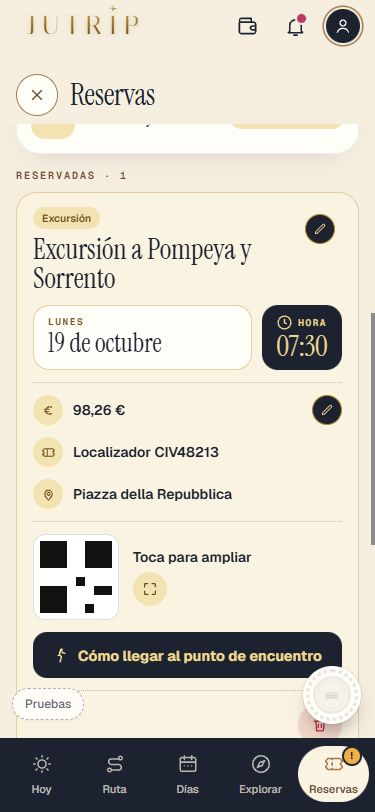
10r_reservas_excursion_billete_pago_375 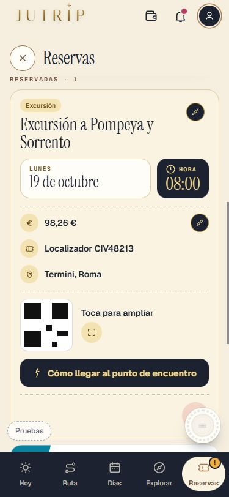
10r_reservas_excursion_comollegar_375 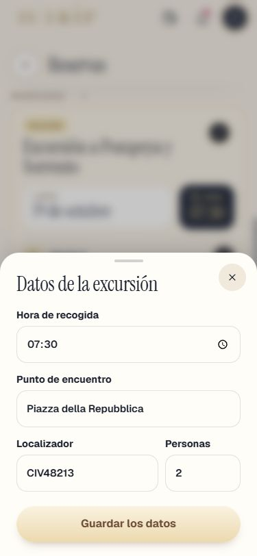
10r_reservas_excursion_datos_gratis_375 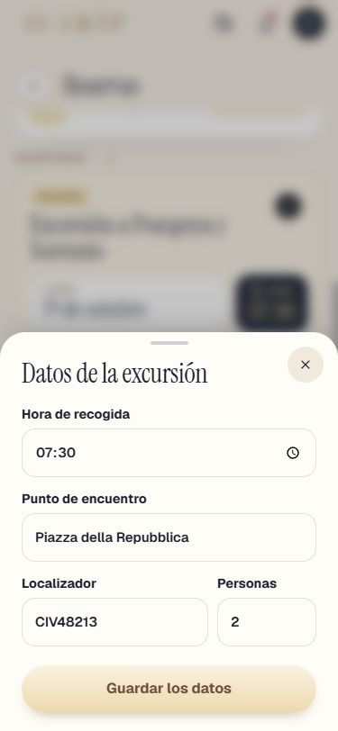
10r_reservas_excursion_datos_pago_375 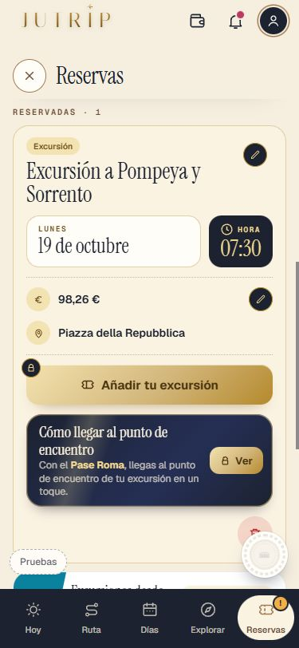
10r_reservas_excursion_gratis_375 10r_reservas_excursion_pago_375